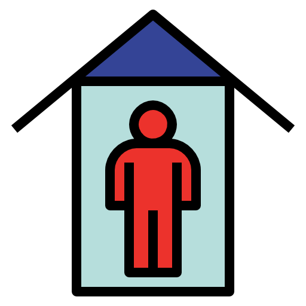

What is stressing you out?
Everyone who does a PhD experiences some kind of stress, which doesn’t have to be a bad thing and may even push you to achieve your goals. However, stress can also be very destructive and can make simple things very hard. Here is a little list of common stress causes that PhD students often experience.
|
|
No more tick boxes.
During your studies you were trained to do short and precise projects and you got constant evaluation on your performance through graded tests. Now you are in this new world of open ended projects on your own and with abstract goals. You probably won’t solve your problems by just working longer and harder.
Tip: break down you research into small, manageable goals. Allow yourself the time to plan.
|
Failing and competition.
School was mostly a breeze and at university you still did pretty well. But suddenly things are not so smooth anymore, you have to deal with the frustrations of failed experiments or projects that are resistant to troubleshooting. You wonder what went wrong, especially when it seems that your peers are doing just fine and are getting all those scholarships and papers? Don’t forget that tasks at school and university were designed to be solved. You are doing real science and failing is pretty much part of the job. Don’t dismiss your talent and be disappointed at yourself if you feel you are not the best. You are probably setting yourself impossible standards as your goals.
Tip: You are the forefront of scientific research – if it was easy it would have been done! No two PhD projects are the same, so avoid comparing them. Your colleagues also have their moments of self-doubt - talk to them.
|
|
|
|
Feeling like an impostor.
Do you ever feel like you don’t deserve to be here and everyone else around you is so much smarter? You are definitely not alone as 7 in 10 people experience impostor syndrome throughout their career! The impostor cycle starts when one is faced with a task. Impostors react with crazy over-work or initial procrastination followed hectic last minute work. After the job is done the impostor can feel an initial sense of relief and accomplishment, but that doesn’t last for too long. The impostor has a hard time accepting any positive feedback and often denies their success is related to their own abilities. Instead, they believe that their success is due to hard work or luck. After experiencing this self-doubt rises. Does that sound familiar?
Tip: Try reframing your thinking: aim for progress, not perfection.
|
Feeling guilty and isolation.
Doing a PhD can be an isolating time. In your studies you were always surrounded by many students of your own age, but in a lab this circle often gets smaller. It can get particularly lonely if you moved to a different country for the PhD, and when you are writing a paper or your thesis. On top of this, you might constantly feel bad for forgetting birthdays, neglecting friends and family and skipping events. Whereas, when you force yourself to go to events you feel guilt for not working or writing.
Tip: Be gentle on yourself. Try not lose contact to your friends and family and make new ones on campus! If you are currently writing, write together with colleagues.
|

|
Help is coming!
If you would like to contact the counselor (and get an appointment for free!!) click the link below.
Learn more
Next up:
How does your mental health look like: Recognizing the signs for stress and depression.